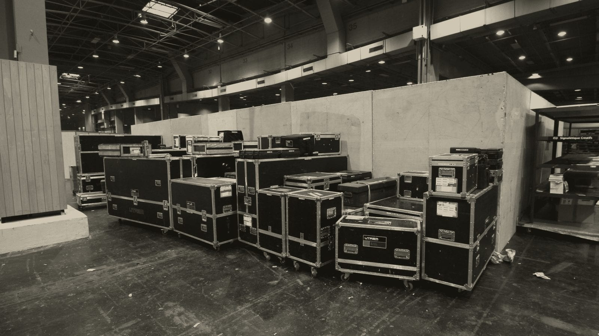
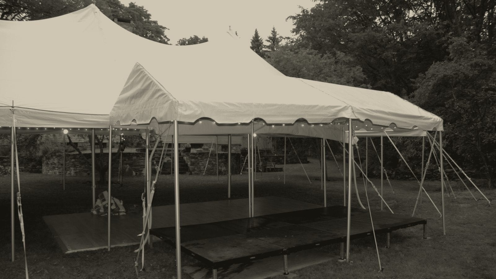

The cost guide
What live music costs in Colorado.
For weddings, Colorado couples budget $2,338 to $2,858 for a live band for their wedding. The Denver market runs about $2,500 to $8,000, with a trio at the cheaper end of the spectrum, and a full band, complete with horns at the expensive end.
Those figures are based on published market pricing research in 2026. This page addresses what the money covers, why the spread is so large, and what can be modified to save money (or spend more).
Each Signet Artists has different pricing and availability, tell us the date and what you have in mind for the event, and we'll reply with a recommendation and a price.


What the Price covers
With most acts in the Colorado market, the price has two parts. A call-out covers the whole event commitment, whatever its length: the drive, load-in, setup, sound check, strike and production. In addition to that, a rate for performance time covers the music. That split is why a 1-hour cocktail set costs more than 1/4th of a 4 hour reception.
Overtime is the next thing to look for on a quote. The Colorado market charges $200 to $400 for time beyond the contracted set, which is worth knowing before the night.
Beyond that, you may have travel beyond the Denver metro area, lodging for the talent if it's outside our metro service area, and a bit more for holiday weekends.
The market
The price of live music in Denver, Colorado and The US market, number by number.
These are published numbers from cost guides, a wedding-budget dataset and one booking marketplace.
| 2 hours of live music performance | Market rate | Market |
|---|---|---|
| trio to a full band with horns | $2,500 to $8,000 | Denver |
| four to six-piece bands, Denver mid-market | $4,000 to $6,000 | Denver |
| A cover or jazz band for a corporate event | $2,500 to $8,000 | United States |
| average budget for a live wedding band | $2,338 to $2,858 | Colorado |
| What most couples pay for a wedding band | $3,000 to $8,000 | United States |
| A seven to nine piece show band | $7,500 to $17,000 | United States |
These prices come from published 2026 market guides, read September 2026. We quote each date one-by-one.
Resort bookings cost more than Denver metro bookings everywhere in this market for the same two reasons: the drive, and the lodging. Altitude, town noise rules, curfews and the rest of the mountain corridor's working detail are on the mountain venues page, and corporate retreats is where we go into resort booking with more detail
Market context
Why the prices spread this far.
Live music in Colorado is priced in tiers, and each tier buys a different thing. Reading a number without knowing which tier it came from is how two quotes end up looking like the same purchase.
- The marketplace tier
- One online booking marketplace shows that the average cost for a Denver party band is $1,150. But the listings show prices that range from $230 to $3,550. You're seeing a price that buys the act, but what else is included (sound, insurance, travel, production) varies listing by listing. Two quotes for the same raw material, can cover two very different evenings.
- The working middle
- The Denver market treats the 4-6 piece band as its median: priced at $4,000 to $6,000, and for weddings, a Colorado couple's budget $2,338 to $2,858 for a band is reflected in market prices Colorado-wide.
In the resort corridor, a 5-6 piece band runs $2,500 to $6,500 in Mountain West markets. Nationally, regarding wedding bookings, most couples land in the $3,000 to $8,000 range, with the average sitting around $4,500. Which is very similar to the range private and corporate events are booked at as well. - The production tier
- A 7-9 piece show band runs $7,500 to $17,000, and full production adds costs like show direction, lighting, staffing and a program designed around the act. For a gala carrying a production budget, it's the right purchase.
What a Signet night comes to depends on the night. A solo musician through a dinner for twelve and a quartet filling a dance floor all night all have different jobs.
jazz trio & Acoustic duo costs
These are the two sizes most Colorado event planners actually book for different parts of the evening, and they're the two most market published rate guides have the least information about. The prices below are published market rates for each.
- The jazz trio
- A trio across a 4-hour evening can run $2,000 to $3,500 in the Colorado market. For a dinner set rather than a full evening, a jazz trio or acoustic duo runs $500 to $3,000. The pricing difference relates to how long the sets are and how much production is required. Denver has no trio figure of its own in print: the Denver band range of $2,500 to $8,000 begins at the trio and ends at a full band with horns, so the trio sits at the bottom of that range rather than in the middle of it.
- The acoustic duo
- An acoustic duo across a 4-hour evening can run $1,500 to $2,500. It's the smallest full-evening price published anywhere in the Colorado market.
Two musicians cover a dinner or a cocktail hour without a stage, and for a short booking the Denver market puts a duo or trio at a ceremony or cocktail hour at $800 to $2,000. A duo evening and a trio evening are one musician apart, and the market prices that one musician as the difference between $1,500 to $2,500 and $2,000 to $3,500. - What changes the prices?
- The number of musicians. How long they play, and what the date is. A December Saturday in Denver builds-in a 20% - 30% markup. Additionally, a resort date has to cover the drive and a night's lodging for all involved.
What is a jazz trio?
Three musicians, and the instrument list is the part people are usually asking about. The traditional combos are piano, bass and drums, or organ, guitar and drums. The one that works at a private event is guitar, upright bass and drums played with brushes, because brushes are what let a drum kit sit under a conversation instead of over it. A quartet is the same three with a horn or a voice added.
At an event the trio plays at a level guests can talk across without leaning in (about 60 to 65 dBA at the nearest table), and it covers a larger space and a longer guest list than a duo at that same level. It takes about 12 by 8 feet and one dedicated 20-amp circuit, so it fits a private dining venue as readily as a ballroom, and it plays standards.
The trio and duo configurations and a sample set are on the jazz duo and trio page, and the singer-songwriter version of the same size is the acoustic duo. For the whole size ladder, solo to quartet, check out what a jazz band costs in Denver, and for DJ prices, what a DJ costs in Denver.
By occasion
What each kind of night comes to.
Four bookings cover most of the inquiries we get, and the market prices each one differently.
- The corporate holiday party
- A cover or jazz band for a corporate event runs $2,500 to $8,000 nationally, and a holiday weekend in Denver usually prices 20 to 30 percent above a standard date. Find out more on our holiday party page.
- The client dinner
- The conversation is the event, so the music sits under it at a level guests can talk across. A jazz trio or acoustic duo for a dinner runs $500 to $3,000 in the Colorado market, depending on how long the music plays and how much production comes with it. Find out more on our client dinners page.
- The private party
- A cover or acoustic band for a private party runs $3,000 to $8,000, and a smaller act playing the same music costs well under that: an acoustic duo over a 4-hour reception runs $1,500 to $2,500 and a trio $2,000 to $3,500. Find out more on our private parties page.
- The wedding cocktail hour
- One hour between the ceremony and the reception, and the smallest booking on this list. A duo or trio for a ceremony or cocktail hour runs $800 to $2,000 in Denver. Find out more on our cocktail hour page.
Holiday parties, client dinners and mountain retreats are all covered on our corporate page.
Included in the fee
- A personal point of contact for the night.
- Sound sized for a small-to-medium sized event venue
- Load-in, setup, strike and load-out
- Certificate of insurance
- W-9 and one itemized invoice
- Timeline coordination before the event
- Continuous audio during set breaks
Sound support is included at every size. Stage lighting and a dedicated sound engineer are optional add-ons.
Quoted separately
These are priced separately on any quote.
- Front Range travel: Boulder, Colorado Springs, Fort Collins
- I-70 corridor travel: Vail, Beaver Creek, Breckenridge, Winter Park
- Far resort travel and a night's lodging: Aspen, Telluride, Steamboat, Crested Butte
- Holiday and peak weekends, and New Year's Eve
- Live-band karaoke
- Learned songs, with four weeks' notice
Cost questions, answered.
Questions about substitutions, power, curfews and outdoor cover are answered on the planner question list.
- How much does a live band cost in Colorado?
- Colorado couples budget $2,338 to $2,858 for a live band, and the Denver market runs $2,500 to $8,000, with a trio at the bottom of that and a full band with horns at the top. Nationally most couples land $3,000 to $8,000. Those are the market's published prices. We quote each date one-by-one, so send us the date and the size of the night and we'll come back with a price.
- Why do live music prices vary so much in Colorado?
- Because the market runs in tiers and quotes cover different scopes. One booking marketplace averages $1,150 for a Denver party band, the Denver market treats the four to six piece as its middle at $4,000 to $6,000, and a seven to nine piece show band runs $7,500 to $17,000. What's included in a price, sound above all, varies as much as the price itself.
- What does the mountain premium cover?
- Travel and lodging. A resort date costs more than a Denver metro date for two reasons: the drive over the passes, and a night's lodging at the far end of it, because a band that finished late in Aspen isn't driving back over the passes the same night.
- Is a band or a DJ cheaper?
- A DJ, usually, and the gap narrows as the night gets longer. A Denver DJ carrying a night with production lighting runs $2,500 to $6,000, against $2,500 to $8,000 for a Denver band. A corporate night can use both, a duo through dinner and the DJ carrying the floor, on one contract, which is usually cheaper than hiring twice.
- Does booking early get a lower price?
- No. The price is set by the size of the act, the hours and the date, not by when you book. Holiday weekends and New Year's Eve price above a standard date everywhere.
- How much does a jazz trio cost?
- A trio across a 4-hour evening can run $2,000 to $3,500 in the Colorado market, and a jazz trio or acoustic duo for a dinner set runs $500 to $3,000. Send us the date and the length of the evening and we'll come back with a price.
Send us the date and we'll come back with a recommendation and a price.
Live music for your event, from a solo musician to a full band, with sound support that’s the right size for the venue and a personal contact for the night.